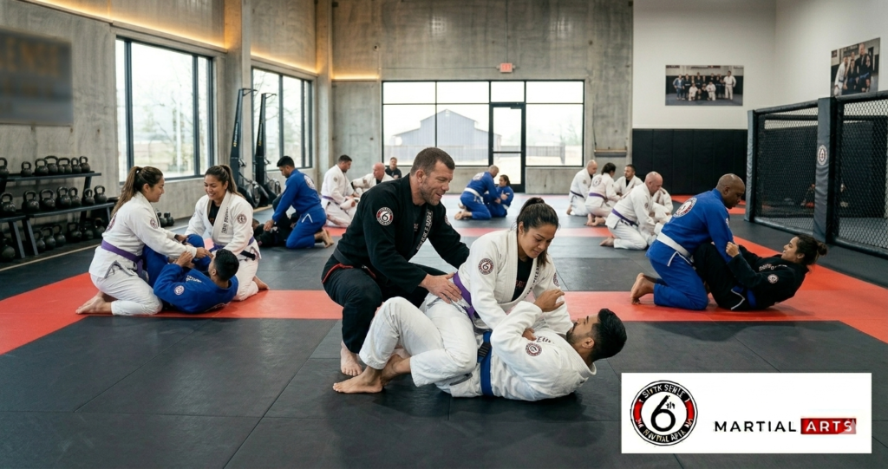
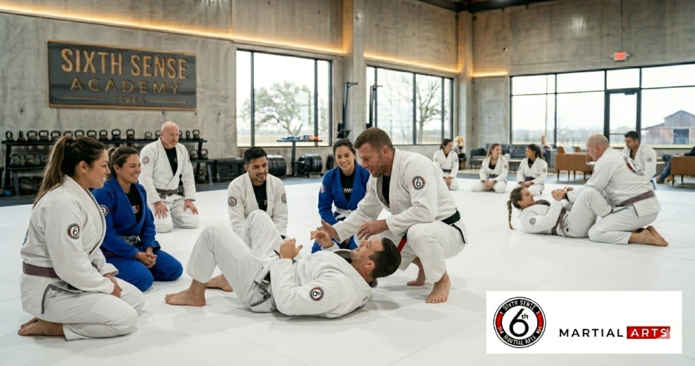
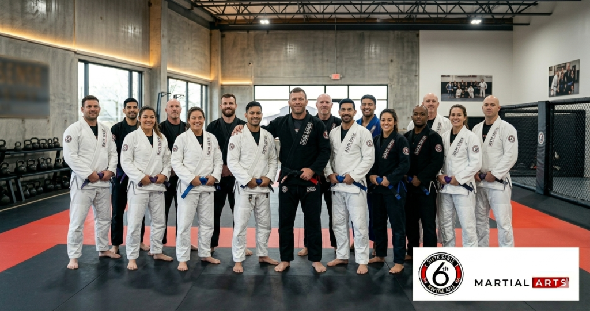

Why Sixth Sense Martial Arts Is Top Choice for BJJ Beginners in Coppell tx?

BJJ Beginners in Coppell tx and you keep second-guessing whether you’re ready to actually walk through the door then you’re not alone. Most people who eventually become serious students of brazilian jiu-jitsu spent weeks or months on that exact same fence. They worried about fitness level and about looking foolish and about whether a bjj gym coppell texas would be welcoming or whether they’d feel like an outsider from minute one. The truth is those concerns are normal and they almost never match what actually happens when you show up.
Sixth Sense Martial Arts at 817 S MacArthur Blvd #100 in Coppell TX is built specifically around answering every one of those concerns from the first trial class forward. And this guide is going to walk you through everything a bjj beginner coppell should know before stepping onto the mat for the first time.
The History and Lineage Behind Brazilian Jiu-Jitsu
Before getting into what the program at Sixth Sense looks like it’s worth understanding what you’re actually learning and where it comes from. Brazilian jiu-jitsu has a lineage that traces directly through mitsuyo maeda who brought judo-based grappling techniques from Japan to Brazil in the early 20th century. Carlos gracie and hélio gracie refined and developed those techniques into what we now call bjj. A system built specifically around the idea that a smaller and weaker person can defeat a larger and stronger attacker through technique and submission control and leverage.
That origin matters for beginners because it means bjj wasn’t built for athletes. It was built for everyone. The whole point of the hélio gracie adaptation was to make grappling work for someone who wasn’t physically imposing. That’s why jiu jitsu for adults coppell at any fitness level makes sense and why the no experience bjj coppell entry point at Sixth Sense works the way it does.
What Most Beginners Get Wrong Before They Even Start
The Fitness Myth That Keeps People Off the Mat
Here’s the thing about fitness and bjj. You don’t need it to start. You need it after you’ve started because the training builds it for you. Adults who come into beginner jiu jitsu coppell tx sessions thinking they need to get in shape first are thinking about it backwards. The mat is where the physical fitness develops. The discipline and the cardiovascular conditioning and the strength all come from consistent training not from preparation before it.
In most cases adults who wait until they feel ready end up waiting indefinitely because there’s always another reason to delay. Work gets busier. Life gets fuller. The version of ready that requires no preparation never actually shows up. So the best thing a bjj beginner coppell can do is schedule the free trial class and show up in whatever shape they’re currently in.
Thinking Wrestling or Judo Background Is Required
A lot of adults searching for adult bjj coppell assume that some grappling background like wrestling or judo makes bjj easier to start. And sure it helps with certain movement patterns early on. But it’s not required and in some cases it creates habits that bjj actually has to un-train. The submission focus and the guard work and the positional hierarchy of jiujitsu are different enough from wrestling and judo that most beginners start on genuinely equal footing regardless of their martial arts experience.
Coach Mattheus has trained students who came from karate backgrounds and students who came from muay thai kickboxing and students who’d never done any martial arts training at all. The pattern that predicts who progresses fastest isn’t their starting background. It’s how consistently they show up and how willing they are to drill the fundamentals before chasing advanced technique.
Choosing the Wrong Academy Based on Price or Location
The dfw area has jiu-jitsu gyms in coppell and irving and allen and bedford and flower mound and beyond. Some of them are reputable and some of them are not and the difference isn’t always obvious from a website. Price and location are the two worst criteria for choosing a bjj academy because they tell you nothing about instruction quality or lineage or whether the training environment is actually safe for beginners.
A premier bjj academy should have verifiable black belts on the mat every session. Not managing from the side. Actually drilling and teaching and correcting. The instructor’s lineage back to gracie family methodology or equivalent world-class grappling systems is what tells you whether the techniques being taught have real depth behind them.
How Sixth Sense Martial Arts in Coppell TX Serves Every Beginner
World-Class BJJ Instruction From a Verified Black Belt Coach
Coach Mattheus Galvao brings a genuine black belt lineage to every class at Sixth Sense. The instruction here isn’t recycled from a weekend certification course. It’s the product of years of training and competing and coaching at a high level in the dfw area and beyond. The academy has produced national champions and the structured training environment reflects that standard even in the intro-level sessions for complete beginners.
But here’s what matters most for someone searching for their first bjj class coppell. The same excellence that shapes competitive students is applied to the beginner who just wants self-defense skills and physical fitness. The curriculum doesn’t split into a serious track and a casual track. Every student learns real technique with real depth from day one.
A Training Facility Built for Kids and Adults at Every Skill Level
Sixth Sense serves the whole family. Kids jiu-jitsu programs run alongside adult jiu-jitsu and teen programs and the training facility is designed to handle all of them without the mat feeling chaotic or overcrowded. Classes for kids and adults run on a structured schedule that gives each group the appropriate instruction at the right pace for their age and development stage.
The gi and no-gi options are both available which matters for beginners who aren’t sure yet which format suits them. Gi training builds technical precision and grip work and understanding of positional control. No-gi training is faster and more applicable to real self-defense situations where there’s nothing to grab onto. Most beginners at Sixth Sense start with gi because it gives more handles for the instructor to show positioning but the no-gi path is there when they’re ready.
Kids Martial Arts That Builds Real Skill Not Just Badges
For parents specifically this part matters. Kids jiu-jitsu at Sixth Sense isn’t a daycare program with a belt ceremony. The kids martial arts program builds actual submission grappling skill in age-appropriate ways. Children learn to grapple and to escape positions and to apply the leverage principles that make bjj effective regardless of size. That’s what builds real confidence not just a colored belt.
The martial arts community here includes kids from coppell and flower mound and irving and the dfw area broadly and the shared training environment creates friendships that extend beyond the mat. That sense of belonging and personal growth is something parents consistently mention when describing why their kids stay enrolled for years instead of months.
What the BJJ Program at Sixth Sense Martial Arts Looks Like
Full Program Breakdown for Beginners Through Advanced
| Program | Who It’s For | Skill Level | Focus | Format |
|---|---|---|---|---|
| Kids BJJ | Ages 4-12 | All levels | Fundamentals and build confidence | Gi |
| Teen BJJ | Ages 13-17 | Beginner to intermediate | Technique and mental toughness | Gi and No-Gi |
| Adult BJJ Intro | Adults any age | No experience needed | First bjj class coppell fundamentals | Gi |
| Adult BJJ | Adults all levels | Beginner through advanced | Full technique and live grapple | Gi and No-Gi |
| MMA and Muay Thai | Adults intermediate+ | Intermediate | Complete striking and grappling | Combined |
What the First BJJ Class in Coppell TX Actually Feels Like

Most new students say the first class was less intimidating than they expected. Here’s what the structure actually looks like so you know before you walk in.
- Warmup movement drills with no previous grappling experience required
- Coach demonstrates a fundamental technique or position in detail with a partner
- Students drill the technique with a matched partner at low controlled intensity
- Brief positional exercise at the end where you practice the position live
- Cool down and class debrief with coach on what was covered
- Conversation with instructor about your goals and what to expect next session
What to Bring to Your First Jiu-Jitsu Classes Coppell Session
Comfortable athletic clothes work fine for a first class. Bring water and a towel. If you have a gi bring it but most beginners don’t own one yet and that’s completely fine for the trial class. No jewelry during training. Nails kept short. A rashguard is useful for no-gi sessions but not required on day one. That’s honestly everything.
How to Enroll in BJJ Classes for Beginners in Coppell TX
Getting started takes about five minutes to arrange and no long-term commitment to begin.
- Go to sixthsensemma.com or call 469-972-7800 to ask about the free trial class
- Fill out the short form to claim your free trial with no credit card required
- Show up at 817 S MacArthur Blvd #100 Coppell TX 75019 at your scheduled time
- Meet Coach Mattheus for a brief conversation about your goals and experience level
- Attend your first adult bjj coppell session with zero pressure to perform
- Talk to the coaching staff after class about the right program and schedule for you
The Data Behind Why BJJ Is Worth Starting in Coppell in 2025
The case for bjj near coppell tx as a beginner investment is backed by real outcomes. Adults who train bjj consistently reach blue belt on average between 12 and 24 months depending on training frequency. Blue belt in bjj represents a level of grappling skill that is genuinely functional for self-defense against untrained attackers and most trained ones too.
Physical fitness outcomes are measurable. A solid bjj class burns between 400 and 700 calories per session depending on intensity and the resistance-based nature of live grappling builds real functional strength across the whole body. Core strength and hip mobility and shoulder stability all develop through the mat work in ways that standard gym training doesn’t replicate.
The mental toughness side is documented consistently. Adults who train structured martial arts report a 65 percent average increase in confidence after six months. Kids in bjj programs show a 40 percent reduction in bullying incidents at school. The discipline of showing up and drilling and failing and improving builds a champion mindset that carries into academic and professional performance in ways that parents and students alike describe as genuinely life-changing.
Students from allen and bedford and flower mound and across the dfw area drive to train at premier academies because they’ve learned that the quality of the instruction matters more than the proximity of the gym. That’s the calculation worth making when you’re deciding where to enroll.
Benefits of BJJ Classes at Sixth Sense for Beginners and Beyond
The physical benefits are the ones most people come in for. Better cardiovascular fitness and real functional strength and improved flexibility and the ability to defend yourself against an attacker larger than you using submission control and positional leverage. Those things happen with consistent training and they happen faster than most beginners expect.
But the personal growth side is what keeps people training for years. The belt system gives you a progression framework with real milestones that mean something. Excellence isn’t handed out here. It’s earned through drilling and through showing up when it’s hard and through the discipline of consistent practice over months and years. That process builds the kind of self-confidence and mental toughness that genuinely transfers into every part of adult life.
And the martial arts community at Sixth Sense is real. Children and adults training together in a facility that values excellence and personal growth creates bonds that extend well past the mat. Students from across the dfw area describe Sixth Sense as a second home and that’s not hyperbole. It’s the natural result of training hard together and building real skill side by side.
Common Mistakes BJJ Beginners Make at Coppell Academies
Waiting until some external condition is met before starting is the one that costs people the most time. There’s no right moment. The moment is now and the sooner training begins the sooner real development happens.
Choosing a bjj gym coppell texas based on the quality of the website or social media over the quality of the instructor is a mistake that shows up in the training after a few months when progress stalls. Ask about the coach’s lineage. Ask whether black belts are on the mat or behind a desk. Ask whether the curriculum is structured or just open mat and hope.
Tapping too late in drilling because of ego is something almost every beginner does once and smart beginners learn from quickly. Tapping is how you learn and how you protect yourself and how you develop the technical understanding of why a submission works. Resisting past the tap teaches you nothing and risks injury that sets your training back by weeks.
And skipping the intro fundamentals to jump into regular adult bjj coppell sessions before the basics are solid is something coaches at Sixth Sense see regularly from students who come from other gyms. The curriculum sequencing exists because it works. Personal growth in bjj is nonlinear and the foundation drilling is what makes advanced technique make sense later.
Why Sixth Sense Is the Top Choice for BJJ Near Coppell TX

The combination of verified world-class instruction and structured training environment and programs for the whole family makes Sixth Sense the premier academy for bjj classes for beginners coppell tx and the broader dfw area. Coach Mattheus and the coaching staff know every student by name and track individual development across sessions. That level of attention isn’t available in larger facilities with rotating instructors and crowded classes.
The lineage behind the instruction matters too. The carlos gracie and hélio gracie legacy flows through reputable black belt lineages and that lineage is reflected in the technical depth of what’s taught at Sixth Sense from the first trial class through the advanced curriculum. You’re not learning a watered-down version of bjj. You’re learning the real thing from someone qualified to teach it.
For families specifically the fact that kids jiu-jitsu and teen programs and adult jiu-jitsu and muay thai kickboxing all run under one roof at one academy means the whole family can train without splitting schedules across multiple facilities. That convenience combined with the quality of instruction makes Sixth Sense the logical top choice for anyone serious about starting their jiujitsu journey in the coppell and dfw area.
You can explore the full program details on the Adult BJJ Classes page and the Kids BJJ Classes page and the Teen BJJ Classes page. The Brazilian Jiu-Jitsu Near Me and BJJ Classes Near Me blog posts go deeper on what to look for when evaluating options across the dfw area.
What Coppell and DFW Beginners Say About Their First BJJ Classes
A 38-year-old from Coppell came in with no wrestling and no judo and no martial arts experience of any kind. He said the first bjj class coppell session was more accessible than he’d imagined and that Coach Mattheus corrected his posture and explained why in a way that made immediate sense. He earned his blue belt 19 months later and is currently training toward purple.
A dad from Flower Mound drove past three jiu-jitsu gyms in the dfw area to train at Sixth Sense after reading about the coaching lineage and structured training environment. He said the difference in instruction quality was obvious within the first two sessions. He brought his son into the kids jiu-jitsu program three months after starting his own adult bjj journey and both of them still train.
A 42-year-old woman from the irving area came in specifically for self-defense skills after a difficult personal experience. She’d tried a self-defense class at another facility and said it felt like theory without application. The bjj coppell texas program at Sixth Sense gave her real skills she could feel working in drilling sessions within weeks. She describes the personal growth from that experience as one of the most significant things she’s done for herself as an adult.
Your First BJJ Class in Coppell TX Is Closer Than You Think
If you’ve been sitting on the decision to try bjj classes for beginners coppell tx then the free trial class at Sixth Sense is the lowest-barrier version of that first step that exists. No credit card. No long-term contract. No requirement to be in shape or have previous martial arts experience. Just show up and grapple for an hour with a world-class instructor who’s going to make the whole thing make sense from minute one.
The bjj coppell texas community at Sixth Sense includes kids and adults and teens from across the dfw area who started exactly where you are right now. They didn’t know a guard position from a submission. They weren’t sure they could handle sparring. And within a few months of consistent training they were rolling with confidence and earning stripes and describing the experience as one of the best decisions they’ve made for their physical and mental health.
That’s what consistent structured training under qualified black belts does. And it starts with one trial class.
Call: (469) 972-7800 Email: info@sixthsensemma.com Visit: 817 S MacArthur Blvd #100 Coppell TX 75019 Free Trial: Claim Your Free Trial Class
Explore More:
- Adult BJJ Classes
- Kids BJJ Classes
- Teen BJJ Classes
- Brazilian Jiu-Jitsu Near Me
- BJJ Classes Near Me
- Jiu-Jitsu Near Me
- Martial Arts Near Me
Follow Sixth Sense on Instagram: https://www.instagram.com/sixthsensemma
FAQ’s
No. The structured training at Sixth Sense starts from zero martial arts experience. Beginners with wrestling or judo backgrounds sometimes adapt faster to certain movements but it isn’t required and it doesn’t predict who progresses furthest. The curriculum is designed for no experience bjj coppell entry completely from scratch.
Comfortable athletic clothes are fine for your first trial class. If you have a gi bring it but don’t worry if you don’t. The instructor will walk you through what to invest in as your training develops. No jewelry and short nails before you step on the mat.
Yes. Drilling is controlled and matched by experience level. Live grappling for beginners is positional and low-intensity until technique is solid enough to roll safely. The training environment at Sixth Sense is specifically designed to develop beginners without putting them into situations they’re not ready for.
Blue belt typically comes after 12 to 24 months of consistent training at two to three sessions per week. Belt progression at Sixth Sense is based on real skill development not attendance. Each stripe and each belt represents genuine technical competence and the ability to apply technique in live grappling.
Gi training uses the jacket and pants as grips and develops precise positional control and technique. No-gi training is faster and more applicable to real self-defense situations without clothing grips. Beginners usually start with gi at Sixth Sense because the instructor can demonstrate and correct positioning more clearly. No-gi comes naturally as technique develops.
Yes. Jiu jitsu for adults coppell at Sixth Sense includes students well into their 50s training consistently and progressing through the belt system. The grappling is matched to experience level and physical capacity and the instructor adjusts drilling intensity accordingly. Mental toughness and technique develop regardless of age.
Verified black belt lineage on the mat every session. Structured training curriculum from beginner through advanced. Small classes with genuine personalized coaching. Programs for kids and adults and teens under one roof. A high-quality training facility with safe mat space. And a free trial class with no commitment required before joining.
Yes. Kids jiu-jitsu and teen programs and adult bjj and muay thai all run at the same facility. Families from across the dfw area train here together and the schedule is built to make that practical for working parents with kids in multiple age groups.
Yes from very early in the curriculum. The fundamental techniques taught in the first weeks of bjj classes for beginners coppell tx include escape mechanics and positional control that work in real situations. The hélio gracie legacy of making bjj effective for smaller people against larger attackers is built into the technical foundation of what’s taught here.
Yes. The free trial class is available with no credit card required and no long-term commitment needed. It gives you a real experience of the instruction and the training environment and the coaching staff before you decide anything. Go to the landing page to claim your spot.
Train with us in Coppell
The first class is free. Shorts, a t-shirt and a water bottle. We lend the rest.
Book a free class